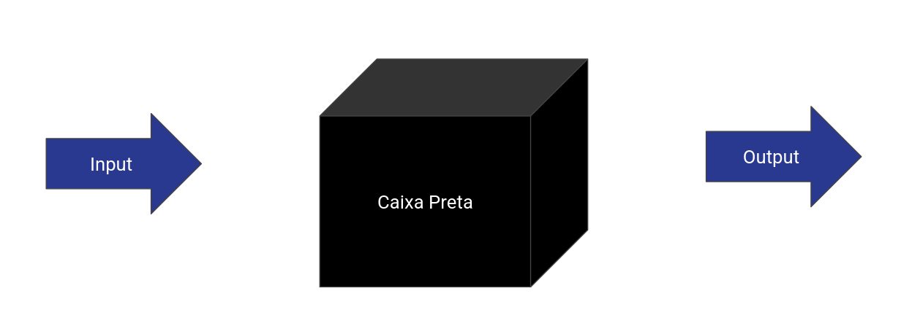
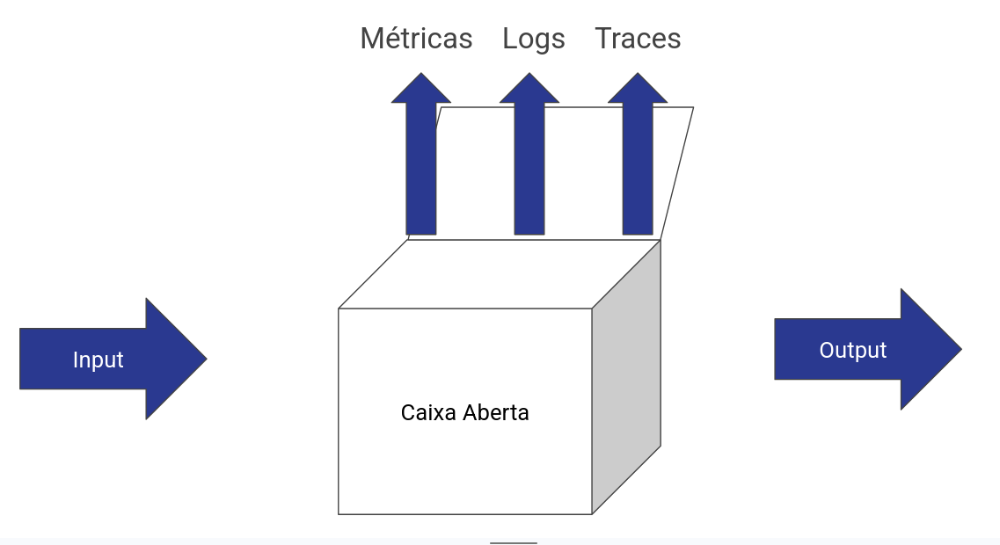

Observabilidade na Era dos Sistemas Distribuídos
05 de Maio de 2026Conectando com as aulas anteriores
Já quebramos silos, entendemos a cultura (Aula 16), e melhoramos o fluxo (Aula 17).
Já "garantimos" a segurança e o deploy (Aulas 19-20).
Já estamos de olho no que acontece, os logs (Aula 21).
Agora: Como saber se o que deployamos está realmente saudável?
processo de coletar métricas e eventos pré-definidos do sistema para detectar falhas conhecidas e disparar alertas rapidamente quando algo sai do esperado.
do Latim, monere + monitor "Monitorar + Indicar" = "Monitoramento"

Capacidade de entender o que está acontecendo dentro de um sistema. E Explorar propriedades e padrões não definidos com antecedência.
do Latim, observare
ob- (diante de)
servare- ( guardar/salvar)
"o -dade" é o sufixo que transforma o verbo em substantivo, ou seja, a qualidade de ser observável.

Metrics, Events, Logs, Traces
Mudanças pontuais no sistema, como deploys, crashes ou alterações de configuração.
O registro de eventos discretos. O "meu querido diário" do sistema.
Dica: Fuja dos logs não estruturados. Lembra do JSON (aula anterior)!Dados agregados ao longo do tempo (CPU, Memória, Erros/Seg).
Essencial para Dashboards e Alertas.
A jornada de uma requisição entre múltiplos microserviços.
Onde está o gargalo? Onde a requisição morreu?
O padrão da indústria
Evita o Vendor Lock-in. Você coleta os dados de um jeito e envia para onde quiser (Grafana, Datadog, New Relic).
A observabilidade alimenta o backlog. Se algo está lento em produção, o time de engenharia sabe exatamente o que otimizar.
ecossistema OpenTelemetry